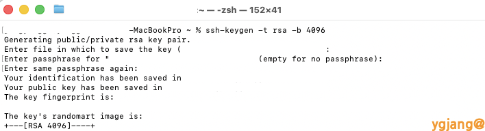

# 1. 패키지 업데이트
sudo dnf update -y
# 2. 설치 확인
rpm -qa | grep openssh-server
# 결과 : openssh-server-8.7p1-47.el9_7.rocky.0.1.x86_64 가 나오면 설치되어 있음
# 2-1. 미설치 시 아래 명령어로 설치 가능
sudo dnf install openssh-server -y# 1. 서비스 활성화 및 즉시 시작
sudo systemctl enable --now sshd
# 2. ssh 상태 확인 (결과가 Active: active (running) 일 경우 활성화)
sudo systemctl status sshd# 1. 방화벽 확인 (services 항목에 ssh 확인)
sudo firewall-cmd --list-all
# 1-1. 없을 경우 ssh 추가
sudo firewall-cmd --permanent --add-service=ssh
# 2. 즉시 반영
sudo firewall-cmd --reloadRocky Linux 9부터는 root 계정의 비밀번호 접속이 기본적으로 제한될 수 있으므로 설정을 확인합니다.
# sshd 설정 파일 수정
sudo vi /etc/ssh/sshd_config
# 아래 항목들의 주석(#)을 해제하여 활성화 (vi 에디터에서 해당 라인 확인)
# 45번 라인 부근: PubkeyAuthentication yes
# 49번 라인 부근: AuthorizedKeyFile .ssh/authorized_keys
# 65번 라인 부근: PasswordAuthentication yes (필요 시)
# 수정 후 esc -> :wq 입력하여 저장# 1. SSH 인증키 생성 (RSA 4096비트)
ssh-keygen -t rsa -b 4096
# -t : 키 타입(RSA), -b : 비트 길이
# 질문 프롬프트 발생 시:
# - 파일 경로: Enter (기본값 사용)
# - Passphrase: Enter (공백 처리 가능)
# 2. 생성된 키 파일 확인
ls -al ~/.ssh
# id_rsa (비공개 키 - 노출 금지)
# id_rsa.pub (공개 키)
생성한 공개키(id_rsa.pub)를 접속하려는 서버의 authorized_keys 파일에 등록해야 합니다.
# macOS에서 서버로 키 복사 (가장 간편한 방법)
ssh-copy-id root@<서버_IP_주소>
# 또는 수동 등록 시 서버의 ~/.ssh/authorized_keys 파일에 id_rsa.pub 내용 추가